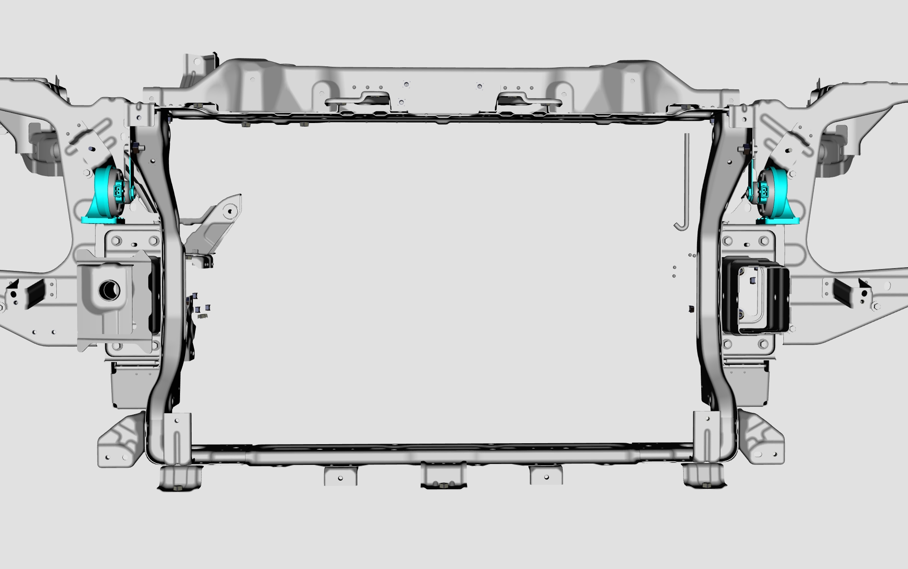
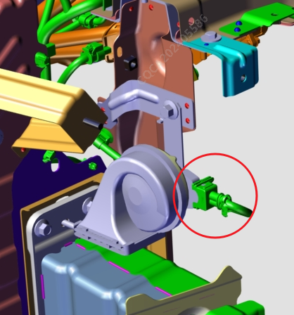

Снятие
Выключить зажигание автомобиля, DCDC не работает, а также отсоединить отрицательную клемму маленькой батареи.
Снять Звуковой сигнал.
Снять болт крепления Звуковой сигнал. Инструмент: торцевая головка (10 mm), момент затяжки: 20 ± 2 N.m.

Отсоединить электрический разъем жгута проводов Звуковой сигнал, извлечь Звуковой сигнал.

Установка
Установка выполняется в порядке, обратном снятию.